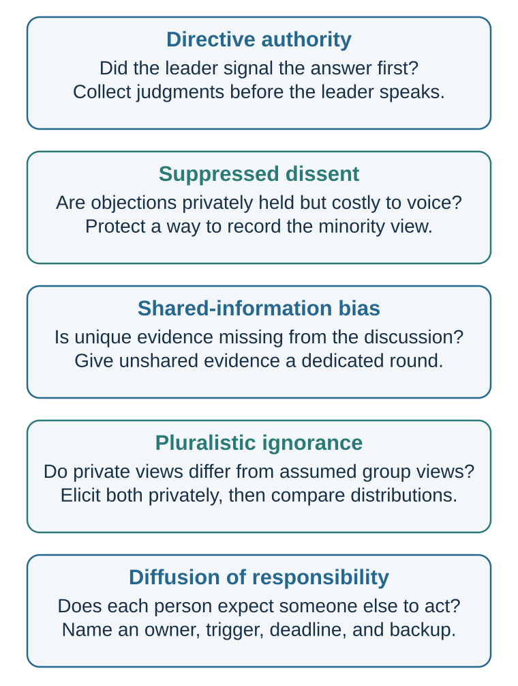

28 Authority, Groupthink, and Shared Responsibility
Signals that coordinate behavior—and can be counterfeited
Markets can coordinate through prices without a single commander. Organizations also coordinate through leaders, roles, meetings, and assigned responsibilities. This chapter asks when those concentrated social signals guide judgment and when they suppress evidence, dissent, ownership, or action.
Learning goals
- Explain how authority can coordinate expertise while displacing judgment or personal responsibility.
- Distinguish directive authority, suppressed dissent and false unanimity, shared-information bias and hidden profiles, pluralistic ignorance, and diffusion of responsibility.
- Redesign one group decision or escalation process so evidence, ownership, dissent, and a safe path to correction are explicit.
Groupthink: a familiar but contested umbrella
Janis (1982) made groupthink a familiar account of how pressure for concurrence could narrow the appraisal of evidence and alternatives in policy groups. In his model, antecedent conditions could produce self-censorship, pressure on dissenters, and an illusion of unanimity, followed by defective decision processes. The framework remains a useful warning that agreement can be socially produced rather than evidentially earned.
It is also contested. Aldag and Fuller (1993) found that research did not convincingly validate the complete syndrome or a simple path from its proposed characteristics to poor outcomes. Esser’s (1998) review found mixed results and continuing heuristic value, while emphasizing theoretical and methodological problems. The responsible use of the term is therefore as an umbrella that prompts diagnosis, not as a diagnosis supplied by hindsight.
A bad outcome, apparent unanimity, or cohesion alone does not establish groupthink. A bad result can follow from uncertainty, missing expertise, poor incentives, implementation failure, or chance. Unanimity can reflect genuinely convergent evidence or shared values. A meta-analysis found no significant overall effect of cohesion on decision quality; poorer decisions appeared under additional conditions such as directive leadership, and the result depended partly on what “cohesion” meant (Mullen et al., 1994).

Diagnose the pathway
| Pathway | What must be distinguished | Bounded safeguard |
|---|---|---|
| Directive authority | A leader signals a preferred answer, controls the agenda, or raises the cost of disagreement. This can distort discussion without proving a cohesive groupthink syndrome. | When feasible, capture judgments before the leader states a preference; have the leader ask for evidence and speak last; retain an escalation route outside the chain of command. |
| Suppressed dissent and false unanimity | Members withhold objections because speaking is costly, and public silence is then mistaken for private agreement. Silence alone does not reveal whether beliefs changed. | Elicit concerns privately before public discussion, invite specific counterevidence, record unresolved minority views, and show how dissent affected the decision. |
| Shared-information bias and hidden profiles | Discussion repeats information everyone already holds while unique or preference-inconsistent evidence remains unpooled. This information-sampling failure does not require fear or conformity. In a controlled hidden-profile paradigm, discussion favored shared and preference-consistent information (Stasser & Titus, 1985). | Inventory who holds which evidence before advocacy, give unique information a dedicated round, and delay preference aggregation until the evidence map is visible. |
| Pluralistic ignorance | Several people privately doubt the apparent norm but infer from others’ silence that they are unusual. It requires a gap between private views and beliefs about others’ views, not merely quiet behavior. | Separately elicit private judgments and estimates of the group’s judgment, then reveal the distributions without exposing individuals to retaliation. |
| Diffusion of responsibility | Several possible actors each expect someone else to notice, decide, or intervene. This is a failure of action ownership, not evidence of consensus. | Name one next owner, an observable trigger, a deadline, confirmation of receipt, and a backup escalation if the action does not occur. |
These safeguards reduce particular failure routes; none guarantees a correct or ethical decision. Independent elicitation cannot repair missing expertise, speaking last cannot neutralize all status effects, and a formal dissenter can be ignored as merely performing a role. Psychological safety—a shared belief that interpersonal risk taking is safe—was associated with learning behavior in a field study of 51 work teams, but it was not tested as a cure for groupthink or as proof of decision accuracy (Edmondson, 1999). The practical standard is to match the safeguard to an observable failure and check whether previously hidden evidence, disagreement, or ownership actually changed.
The informational and normative routes in Social Norms and Conformity: When Other People Become Evidence can contribute to apparent consensus without being identical to groupthink. Decision Hygiene carries the safeguards forward as a repeatable process for independent evidence, structured disagreement, explicit authority, and learning.
Bystanders and pluralistic ignorance
Social influence can also stop people from acting.
In emergencies, one might expect that more witnesses would mean more help. But research on the bystander effect shows that the presence of others can reduce an individual’s probability of intervention in many ambiguous settings. Darley and Latané (1968) found that participants were less likely to help a person apparently having a seizure when they believed other bystanders were present. That is not a general law that more witnesses reduce total help. A meta-analysis covering more than 7,700 participants found an overall negative individual-level effect, but it was attenuated in dangerous emergencies; some conditions produced non-negative effects when other bystanders could provide physical support (Fischer et al., 2011). Latané and Darley (1970) argued that bystander inaction can arise through noticing the event, interpreting it as an emergency, accepting responsibility, knowing how to help, and deciding to act.
Other people can interfere at several stages. If no one else reacts, the situation may seem less serious. This is pluralistic ignorance: people privately feel concern but infer from others’ calm behavior that nothing is wrong. If many people are present, responsibility diffuses: “Someone else will act.” If action might be embarrassing, people hesitate.
Pluralistic ignorance appears beyond emergencies. Students may privately feel confused but remain silent because no one else asks questions. Employees may privately doubt a strategy but infer from others’ silence that they are alone. Citizens may privately oppose a norm but believe most others support it. College students may overestimate peers’ comfort with drinking because discomfort is hidden (Prentice & Miller, 1993).
Pluralistic ignorance is dangerous because it creates the appearance of consensus. Everyone looks around, sees silence, and concludes that others agree. The group continues a behavior that many members privately question.
Organizations should take pluralistic ignorance seriously. Silence is not consent. Lack of objection is not agreement. A meeting in which nobody speaks may reflect fear, confusion, hierarchy, fatigue, or uncertainty. Leaders who ask, “Any objections?” often get silence because objecting publicly is costly. Better methods include anonymous polling, private written input, structured rounds, red teams, and explicitly asking for concerns.
Diffusion of responsibility also appears in organizations. When many people are copied on an email, everyone may assume someone else will act. When a safety issue crosses departments, each group assumes another owns it. When unethical behavior is distributed across roles, each person sees only a small part and feels less responsible.
The antidote is responsibility design.
Who is responsible for noticing? Who is responsible for acting? What signal requires escalation? How can people safely express concern? What should one person do if everyone else is silent?
Social influence does not only push people toward action. It can also hold them still.
Two links outward
Other people’s actions became evidence in Social Norms and Conformity: When Other People Become Evidence. That chapter distinguishes independent social information from correlated copying, so social proof belongs there.
Reciprocity, commitment, scarcity, liking, unity, and reason-giving are examined in Persuasion: Changing Minds Means Updating Models as conditional signals that can be informative or counterfeited, not as a general-purpose toolkit. Here, the narrower lesson is responsibility: relevant expertise can guide judgment, but no cue transfers moral accountability away from the actor or the institution that designed the role.
Practice Lab
Take one near miss, disputed group decision, safety concern, unethical instruction, or ambiguous request for help. Diagnose the most plausible pathway—directive authority, suppressed dissent, unshared information, pluralistic ignorance, or diffused responsibility—without inferring it from the outcome alone. Then produce an escalation map showing who must notice, what observation triggers action, who owns the next step, how receipt is confirmed, where dissent can be raised, and when the matter escalates again. Include one sentence a junior person can use to question authority without first proving wrongdoing.
Take it forward
- Use this when everyone can see a concern but no one is clearly responsible for testing or acting on it.
- Do not infer agreement from silence, expertise from status alone, or moral permission from an instruction.
- Try this next by naming one person, one observable next action, and one confirmation deadline before the situation becomes urgent.
Authority, silence, dissent, and compliance do not carry fixed meanings. Their interpretation depends on identity, hierarchy, face, relationships, norms, and institutional history. The final chapter of this part therefore asks what the same observable action means here.
References cited in this chapter
Aldag, R. J., & Fuller, S. R. (1993). Beyond fiasco: A reappraisal of the groupthink phenomenon and a new model of group decision processes. Psychological Bulletin, 113(3), 533–552. https://doi.org/10.1037/0033-2909.113.3.533
Burger, J. M. (2009). Replicating Milgram: Would people still obey today? American Psychologist, 64(1), 1–11.
Edmondson, A. C. (1999). Psychological safety and learning behavior in work teams. Administrative Science Quarterly, 44(2), 350–383.
Esser, J. K. (1998). Alive and well after 25 years: A review of groupthink research. Organizational Behavior and Human Decision Processes, 73(2–3), 116–141. https://doi.org/10.1006/obhd.1998.2758
Fischer, P., Krueger, J. I., Greitemeyer, T., Vogrincic, C., Kastenmüller, A., Frey, D., Heene, M., Wicher, M., & Kainbacher, M. (2011). The bystander-effect: A meta-analytic review on bystander intervention in dangerous and non-dangerous emergencies. Psychological Bulletin, 137(4), 517–537. https://doi.org/10.1037/a0023304
Haslam, S. A., & Reicher, S. D. (2017). 50 years of “obedience to authority”: From blind conformity to engaged followership. Annual Review of Law and Social Science, 13, 59–78. https://doi.org/10.1146/annurev-lawsocsci-110316-113710
Janis, I. L. (1982). Groupthink: Psychological studies of policy decisions and fiascoes (2nd ed.). Houghton Mifflin.
Darley, J. M., & Latané, B. (1968). Bystander intervention in emergencies: Diffusion of responsibility. Journal of Personality and Social Psychology, 8(4), 377–383.
Latané, B., & Darley, J. M. (1970). The unresponsive bystander: Why doesn’t he help? Appleton-Century-Crofts.
Milgram, S. (1963). Behavioral study of obedience. Journal of Abnormal and Social Psychology, 67(4), 371–378.
Milgram, S. (1974). Obedience to authority: An experimental view. Harper & Row.
Mullen, B., Anthony, T., Salas, E., & Driskell, J. E. (1994). Group cohesiveness and quality of decision making: An integration of tests of the groupthink hypothesis. Small Group Research, 25(2), 189–204. https://doi.org/10.1177/1046496494252003
Prentice, D. A., & Miller, D. T. (1993). Pluralistic ignorance and alcohol use on campus: Some consequences of misperceiving the social norm. Journal of Personality and Social Psychology, 64(2), 243–256.
Perry, G., Brannigan, A., Wanner, R. A., & Stam, H. (2020). Credibility and incredulity in Milgram’s obedience experiments: A reanalysis of an unpublished test. Social Psychology Quarterly, 83(1), 88–106. https://doi.org/10.1177/0190272519861952
Stasser, G., & Titus, W. (1985). Pooling of unshared information in group decision making: Biased information sampling during discussion. Journal of Personality and Social Psychology, 48(6), 1467–1478. https://doi.org/10.1037/0022-3514.48.6.1467